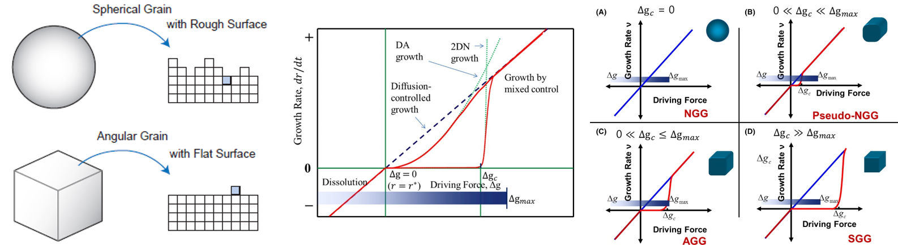
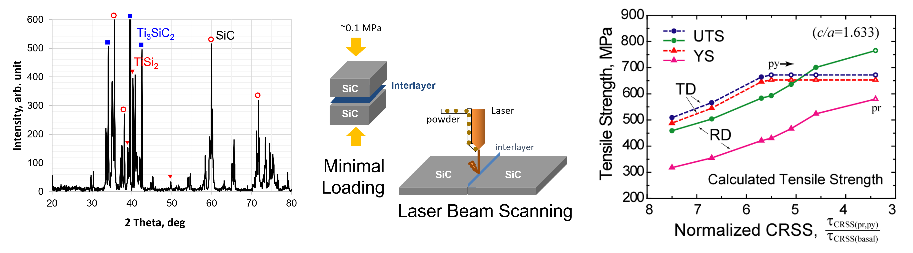
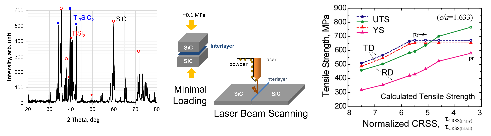

I was born in 1978. I grew up in rural area of South Korea.
I studied at school in my young ages but also engaged in agriculural activities after school.
When I became a high school student, I lived in dormitory where study was everything.
But, it made me a great luck to enter the best university in Korea.
I majored in Materials Science. I mainly studied the abnormal grain growth of ceramics.
It is one of topics of Sintering.
In general, the relationship between the microstructures and materials properties is the main interest.
I am researching materials at my current job, which is also the reason I was able to get a job here.
I also interested in Mathematics. If I had a lot of money enough to live without earning any money,
I would delve into Mathematical theories. Unfortunately, it is a definitely impossible thing.
So instead, I code as a hobby. I'm studying C++, Python, JavaScript, etc. It is really a great fun!
I like to find and learn new things. In that sense, travel is my favorite.
It's nice to take a break, but it's a great joy to experience a new world.
I have been to many countries. USA, Japan, China, Belgium, Spain, Czech, Hungary, Poland, Germany, etc.
In particular, living in the United States for a year on sabbatical leave was an unforgettable experience in
my life.
구조소재는 기본적으로 높은 강도와 인성이 요구되며, 사용환경에 따라 내부식성, 내산화성, 내열강도, 내방사화 특성이
부가적으로 필요하기도 하다. 신소재의 개발은 새로운 조성의 합금원소를 사용하는 것으로 가능한데, 개별 첨가원소의 특징과
효과를 알더라도 실제 합금화 되었을 경우에 발현되는 물성은 예측을 벗어나는 경우가 흔하여 새로운 합금조성의 구조소재를
개발하는 것은 매우 어려운 일이다. 반면 내부식성, 내산화성에 특화된 신소재를 개발하는 것은 보다 쉬우며 성공 가능성이 크다.
이러한 신소재는 강도와 인성을 염두에 두지 않고 개발되므로 구조소재로서 활용이 제한될 수 있다. 따라서 구조소재의 뼈대는
기존 소재를 유지하고 사용환경에 요구되는 부가기능을 코팅이나 클래딩을 통하여 구조소재에 부여함으로써 맞춤형 다기능
구조 소재를 개발할 수 있다. 최근 적층제조의 제조 유연성을 기반으로 설계의 자유도를 높여 물성을 극대화하는 설계기술
DfAM(Design for Additive Manufacturing)도 비중있게 연구되고 있다. 나아가 적층제조는 단일 조성 또는 단일 합금 소재의
제조에 국한되지 않고, 복수의 공급장치를 이용하여 두 종 이상의 복합조성 소재의 제조가 가능한 장점이 있다.
● 구조소재에 부가기능(내부식, 내마모, 내방사화 등)을 부여할 수 있는 코팅/클래딩용 신합금 개발
● 적층제조 기반 코팅/클래딩 공정 개발 및 이를 통한 맞춤형 다기능 구조소재 부품 제조
● 적층제조 기술을 접목한 하이엔트로피(HEA; High-Entropy Alloy) 합금 제조
『 적층제조 첨단 세라믹스 제조기술 개발 』
신개념의 에너지 소재는 적층제조 공정을 활용할 수 있는 최적의 분야이다. 이차전지용 음극소재, 연료전지용 금속 분리막,
화합물 반도체 기반 열전소재 등은 구조 형상의 개발과 소재 구성의 변화를 통하여 성능을 개선하고 있다. 복잡한 구조 형상은
기존의 통상적인 제조방법으로는 제작이 불가하거나 어려운 단점이 있으나 적층제조 공정은 복잡 형상에 대한 제조성이 우수한
장점이 있다.
● 이차전지용 실리콘계 음극소재 구조건전성 및 성능 개선
● 열전소재, 베타전지 등의 화합물반도체 소재 개발
● 혁신구조 다기능 세라믹스 적층제조(에너지 직조사, 바인더 젯) 공정기술 개발

『 계면구조에 따른 입자성장 및 치밀화 거동의 이해 』
소재는 고유한 결정구조를 갖듯이 온도와 환경조건에 따라 고유한 평형 입자모양(equilibrium crystal shape)을 갖는다.
평형 입자모양은 고상-액상, 고상-기상 계면에서는 뚜렷이 확인되나, 고상-고상 계면에서는 인접 grain과의 결정학적 방향에
따라 flat interface, hill-and-valley, rough interface 등으로 다양하게 관찰된다. 입계구조의 특징은 소재의 입자성장과
치밀화 거동에 큰 영향을 미치는 것으로 보고되고 있다. 특히, rough interface를 형성하는 소재에서는 정상입자성장이 주로
나타나고, flat interface를 형성하는 소재에서는 비정상입자성장이 주로 나타난다. 이러한 입자성장 거동의 차이는 입자성장을
위한 핵생성 구동력의 차이에서 비롯되는 것으로 제안되었고, 현재 많은 다양한 소재에서 나타나는 소결(입자성장, 치밀화) 현상을
잘 설명해 준다.


 
